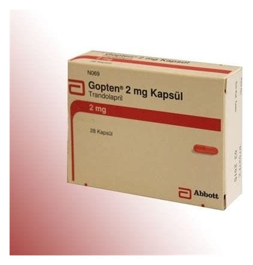

Gopten 2 mg Kapsül, 28 Adet

Ne için kullanılır
KT · Bölüm 1GOPTEN®, 2 mg trandolapril içeren sert jelatin kapsüller şeklindedir.
GOPTEN®, 28 sert kapsül içe ren blister ambalajlarda piyasaya sunulmaktadır.
GOPTEN®’in etkin maddesi olan trandolapril, anjiyotensin dönüştürücü enzim (ADE) inhibitörl eri adı verilen bir ilaç grubuna aittir.
ADE inhibitörl eri kan damarlarını genişleterek vücutta kalbin kan pompalamasını kolaylaştırır ve kan basıncında düşüşe katkıda bulunur.
GOPTEN®hafif ile orta dereceli yüksek kan basıncının (hipertansiyon) tedavisi için kullanılmaktadır. GOPTEN®aynı zamanda, kalp krizi (miyokard enfarktüsü) sonrasında kalp fonksiyonlarını korumak amaçlıda kullanılabilmektedir.